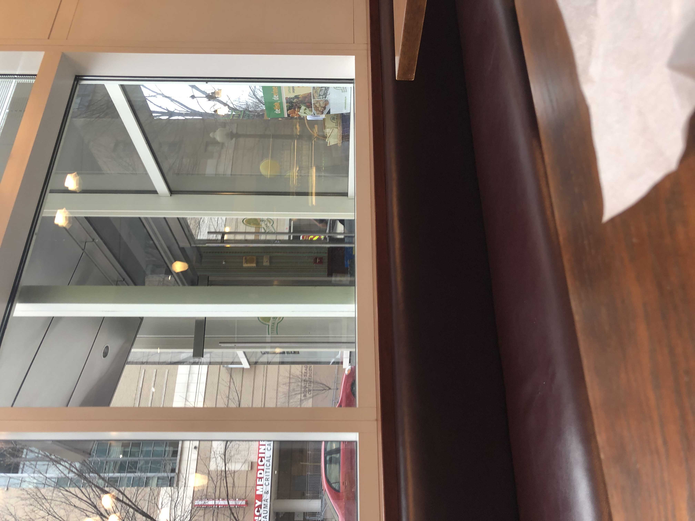
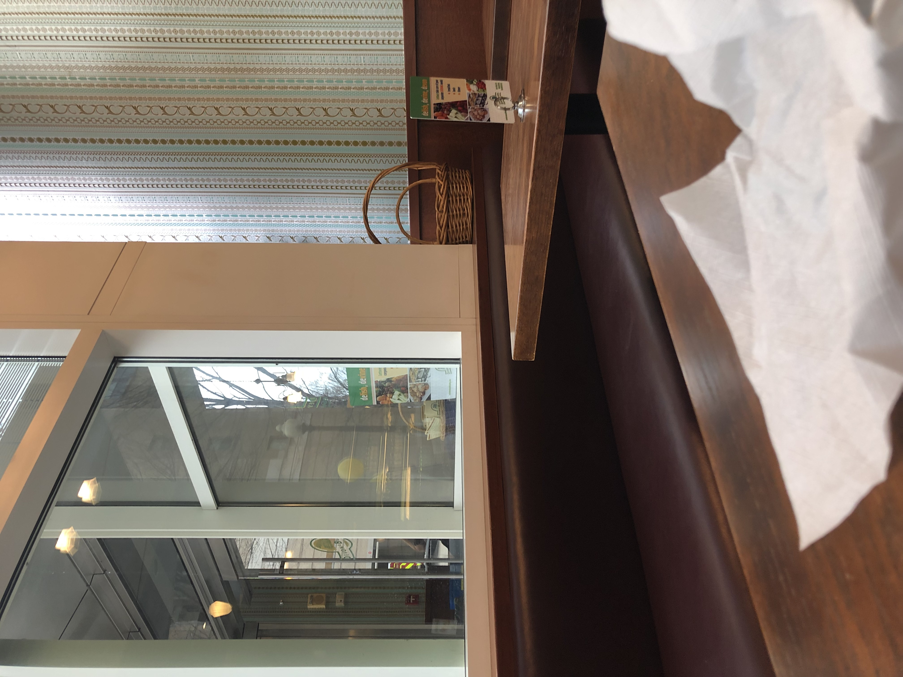
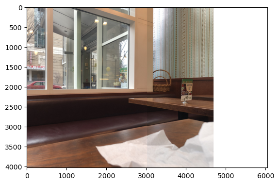
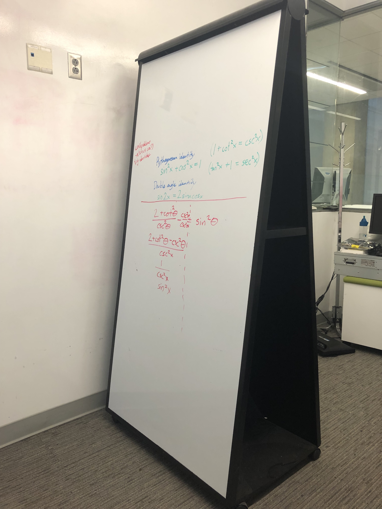
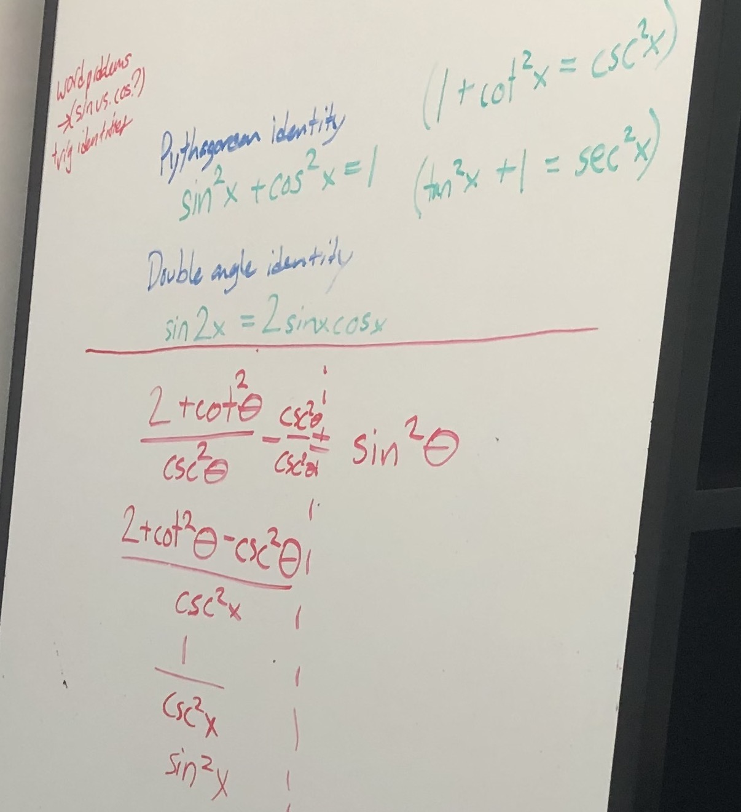
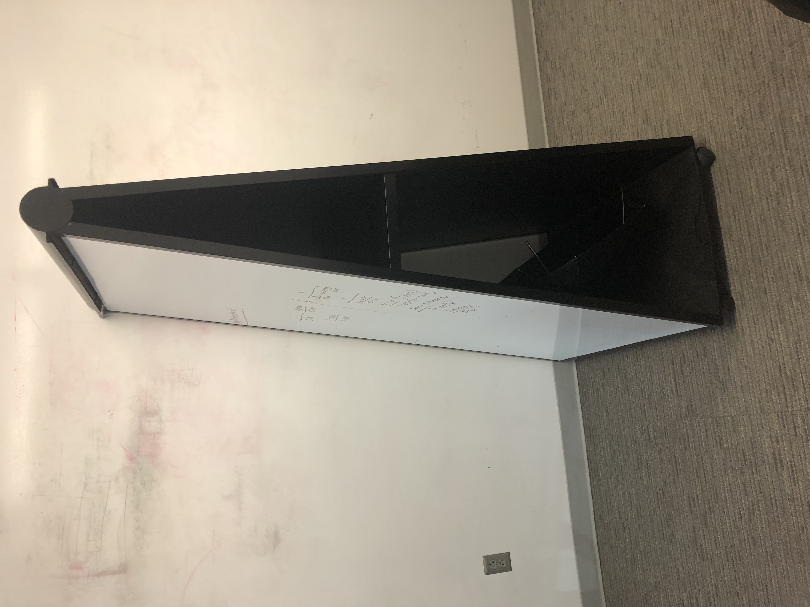
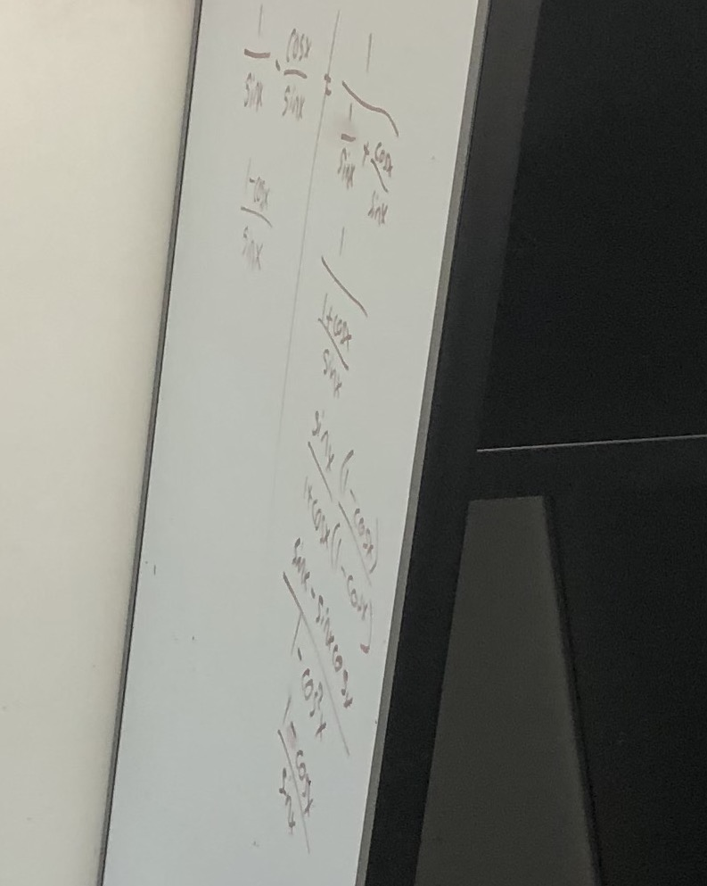
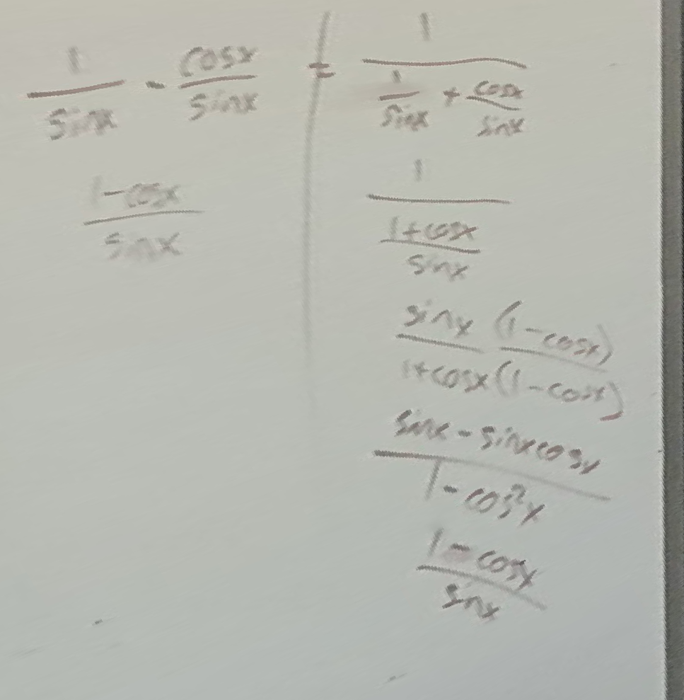
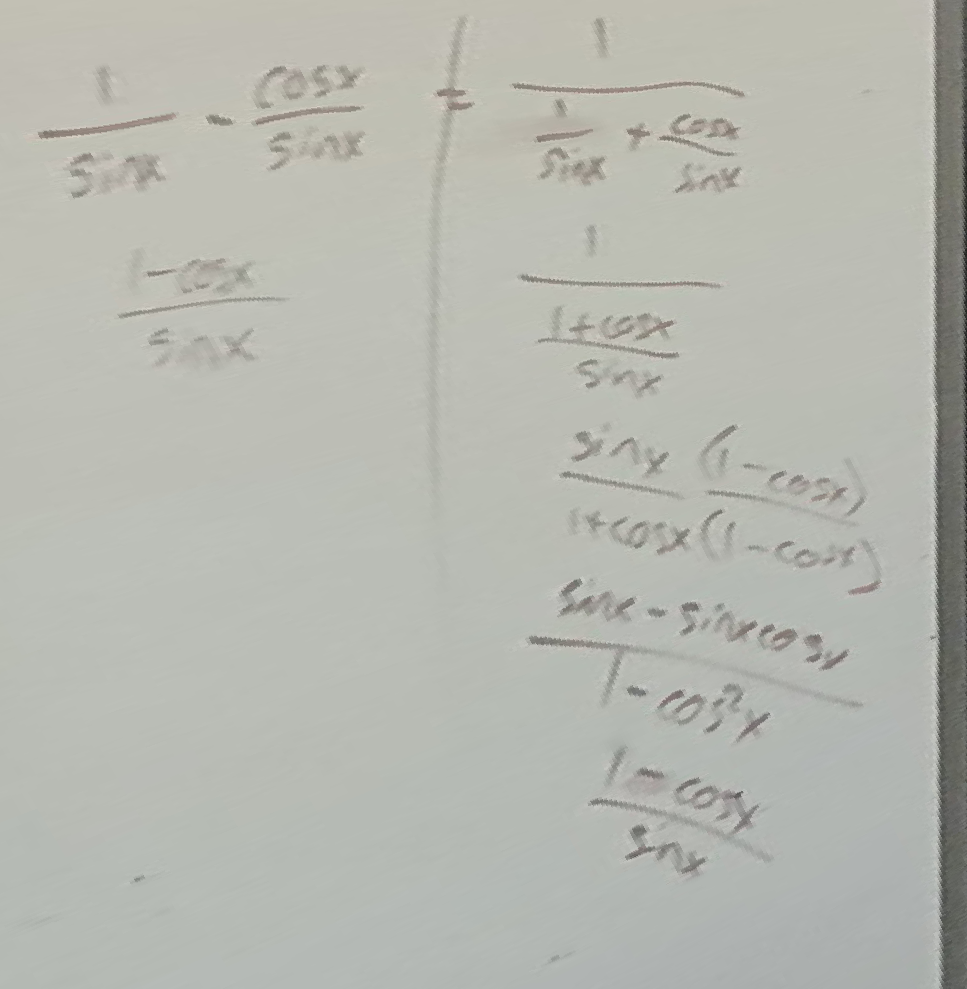

March 2022
Image stitching
An image is like a projection of many 3D rays of light onto a 2D plane. Two images taken from the same location but with the camera pointing in different directions may capture some of the same rays, but simply overlaying the two images won't succesfully align them since the different perspectives distort things. With cool linear algebra, we can find a way to map the coordinates between such images so that they can be combined to show a wider field of view than any one of them showed alone. In this project I capture multiple images from one viewpoint and create such an image stitching.
Note on the idea of a homography
A homography is a map from one projective space to another. In the context of images, the world is a 3D vector space, and two images are 2D projective spaces. To map the coordinates of one image to the other, we use a homography. While the details of the linear algebra are interesting (very), they are beyond the scope of this report. I implemented the linear algebra for finding homographies myself (my bell/whistle), and it was quite fun to do so. In particular, I wrote code to solve the exact system (four correspondences) and to solve the overdetermined system (by minimizing square differences).
Initial two-image stitching
Now that I can find the homography to map pixels in one image to pixels in the other, I can begin creating image stitchings. I start with a couple of images I took sitting at a table eating lunch a few days ago.
 
I can extend the left-hand image by adding new columns at the right-hand side that get pixel values from the right-hand images by mapping the coordinates over. I used an interface on my laptop to click on the images to get their coorespondences. to find the homography. I began by finding just four correspondences, which worked, but I wanted to test that my minimization code worked too, and so I added a fifth point. The alignment got slightly better with the fifth point, but not much. Here is that result.
This is a satisfying result after writing out the code to solve the linear system. That said, it is misaligned. Look at the table. The napkin. The math is clearly doing what it's supposed to, so I blame my clicking precision. I'm not much of a clicker, apparently. While I'll admit that I did spend a bunch of time trying to get really precise clicks, I know that lazy, low-pressure clicking followed by automatic correction/optimization will be much nicer in the long run.
Automatically improved correspondences
I use a basic solution to this problem. For each corresponding point, I search within a small radius (~10 pixels) and find the point which minimizes the sum of the differences squared of the pixels within that same radius. This way my clicks can be off by a bit, but the homography will still be based on the intended correspondences that I had in mind. A bit of a balancing act is performed here. These patches of pixels within the radius shouldn't really be the same in the two images (if they were, no homography is needed: the images are already aligned perfectly). This means that the optimization might not always work, but, by keeping the radius small, it is more likely that the patches will line up even for significantly warped images. This method imediately improved the results.
Now the results are getting seriously satisfying. That is a well-aligned table. And, in future images, I won't have to worry as much about my click precision. That said, the transition is still a bit harsh. It is especially noticable up at the top on the wall where the lighting is different in the two images. I'm guessing my phone 'corrected' for lighting automatically, leading to this difference.
Smoother transitions
An easy way to ease this transition without actually thinking about lighting at all is to have a gradient from one image to the next wherever the images overlap. I'll use a weighted average where the weights are high for an image on its side of the overlap and low out at its boundary. Specifically, I'll assign weights for each row of the stitching by finding the width of the overlap and having the weights be linear from 0 to 1 throughout that overlap. Here is the two-image stitching with that transition.

I am pleased with this result. Artificats of the stitching process are more subtle now. In the transition area, you can find little fuzzy double edges where things aren't quite aligned and the averaging is showing both images. That said, this is certainly the best result so far. And don't be fooled by the shadows! There is a line on the table from the sunlight/shadow, but that line is not from the stitching process. The rightmost overlapping column in the stitching is actually dozens of pixels to the left of that line (check the previous images if you don't believe me).
Rectifying images
Here I'll take a short break from stitching in order to show another use of a homography. We can map points in an image not to another image's plane but instead to some points that give a desired property (shape). An example will make this clearer. I hate when I'm sitting off to one side in a classroom, and I take a picture of the whiteboard to supplement my notes. Of course the picture is all distorted and annoying to read because of the angle. Well, a quick homography solves this problem. Here's an image of some trig on a whiteboard. 
Now, I clicked to find the coordinates of the four corners of the whiteboard, and I then chose coordinates of a perfect rectangle and treated them as the correspondences. The resulting homography gives us a straight-on perspective of the trig!


This is really quite a satisfying exercise, and a nice application of this image warping. This rectifying isn't the focus of this work really, but it's too tempting to not try to push this to a limit. Here's another image that I took of that same white board on another day. It's really difficult to read the writing at all in this image because it was taken at such a steep angle.
 
The same process as before yields the following result.
 

Come on. That's cool.
There is something interesting here. I wonder whether finding a homography to re-project text makes it more readable not just for humans but for machine learning models. Maybe a self-driving vehicle could read road signs more accurately if it made use of this image rectificaiton with a homography. It also makes me wonder if we should be rectifying recorded lectures... I don't love watching algebra recordings with distorted writing.
Bit of code
At one point I had ambitions of interesting photos other than my lunch (which there is still some small chance I do before these are looked at...), but at this point I will now just add a code snippet to wrap up.
Because it occured to me that I'm fulfilling some of the requirements of this project by implementing that homography computation myself, I figured I should show it. Here is my function for that.